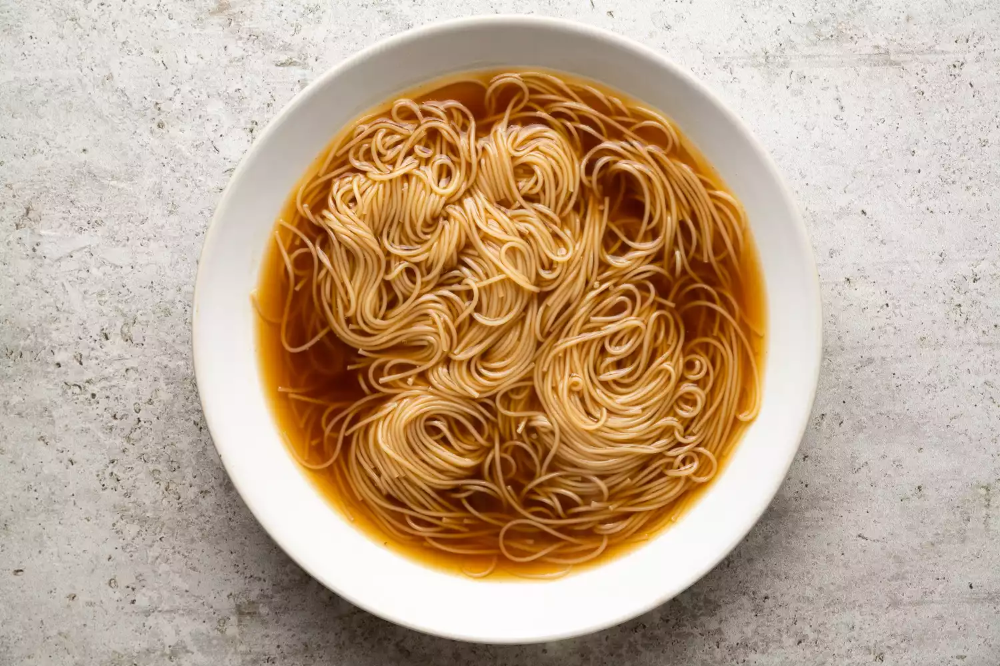

Ramen is a Japanese noodle soup dish that's widely popular in Japan and
throughout the world. Though there are thousands of variations, the dish
consists of a broth base, long thin noodles made from wheat, and an
assortment of toppings.

Ingredients
- 3 cup vegetable broth.
- 1 package ramen noodles with dried vegetable.
- 2 teaspoons of soy sauce.
- 1 teaspoon chili oil.
- 1 teaspoon sesame oil.
- 2 green onions, sliced
- 1 teaspoon minced fresh ginger root.
Return to top
Return to main